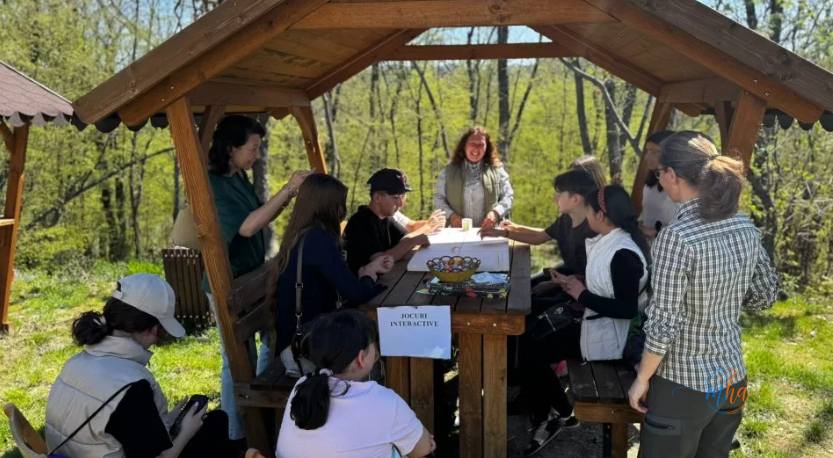

Mehedinți, 8 aprilie 2026. Cea de-a XVIII-a ediție a Zilelor Parcului Natural Porțile de Fier a transformat pentru o zi întreagă aria protejată mehedințeană într-un spațiu viu de învățare, explorare și conectare cu natura. Sute de participanți — copii, tineri și adulți — au descoperit că un parc natural nu este doar un loc frumos de privit, ci un ecosistem complex, fragil și fascinant, care merită înțeles și apărat.
Lectii vii despre natura: lanturi trofice, specii protejate si comunitati locale
Programul ediției a XVIII-a a pus accentul pe educația ecologică aplicată — nu prelegeri teoretice, ci activități hands-on care au transformat concepte complexe în experiențe de neuitat. Participanții au explorat lanțurile trofice ale ecosistemelor din Parcul Natural Porțile de Fier, au aflat povești despre speciile protejate care trăiesc în această arie și au înțeles mai bine rolul comunităților locale în conservarea biodiversității.
Prin jocuri interactive și demonstrații practice, concepte precum „pradă", „prădător" sau „specie-cheie" au căpătat sens concret, iar participanții — în special cei mai tineri — au plecat acasă cu o înțelegere profundă a modului în care funcționează natura.

Echipamentele rangerilor si cuiburi construite cu mainile lor
Unul dintre cele mai apreciate momente ale zilei a fost sesiunea cu echipamentele rangerilor și biologilor Parcului. Vizitatorii au putut vedea, atinge și testa instrumentele folosite zilnic de cei care patrulează și monitorizează aria protejată — de la binoclu și capcane foto, la echipament de teren și dispozitive de monitorizare a faunei.
Dar activitatea care a stârnit cel mai mult entuziasm — mai ales în rândul copiilor — a fost construirea cuiburilor pentru păsări. Sub îndrumarea specialiștilor, participanții au asamblat cuiburi care vor fi amplasate în zonele potrivite din Parc, contribuind concret și direct la protecția speciilor de păsări care trăiesc sau tranzitează zona Porțile de Fier.
„Zi de mare sărbătoare pentru noi! Am reușit să combinăm distracția cu educația ecologică și să aducem oamenii mai aproape de natura protejată."
— Reprezentanții Parcului Natural Porțile de Fier
18 editii de legatura intre oameni si natura
Ajuns la cea de-a XVIII-a ediție, evenimentul a devenit o tradiție solidă în calendarul comunității mehedințene și nu numai. An de an, Parcul Natural Porțile de Fier deschide porțile către publicul larg și demonstrează că protecția naturii nu este apanajul exclusiv al specialiștilor — ci o responsabilitate și o bucurie pe care o putem împărți cu toții.
Evenimentul se înscrie în eforturile continue ale administrației Parcului de a promova conservarea biodiversității și de a implica activ comunitățile locale în protecția uneia dintre cele mai spectaculoase arii naturale protejate din România — o zonă cu peste 5.000 de specii de plante și animale, dintre care multe sunt endemice sau pe cale de dispariție.
🌿 Parcul Natural Porțile de Fier — pe scurt
- 🌎 Suprafață: ~115.000 hectare, pe malul românesc al Dunării
- 🎒 Județe: Mehedinți și Caraș-Severin
- 🦇 Peste 5.000 de specii de plante și animale
- 🐦 Habitat esențial pentru specii de păsări migratoare și cuibăritoare
- 📍 Include siturile Natura 2000 ROSPA și ROSCI
- 🎉 Zilele Parcului — ediția a XVIII-a: 2026
Dacă nu ai ajuns la ediția din acest an, marchează data în calendar pentru 2027 — merită cu prisosință. Și până atunci, Parcul Natural Porțile de Fier te așteaptă oricând, cu poteci, priveliști și povești naturale pe care nu le găsești nicăieri altundeva.